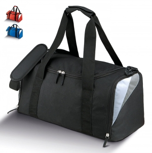

Tipos e variantes
Atividade física e transporte
Sacos de desporto, toalhas e recipientes de bebida acompanham a atividade, mas não desempenham a mesma função. Comece pelo conteúdo a transportar e pelos momentos de uso antes e depois do exercício.
Aspetos que distinguem as opções: Acesso, compartimentos, forma de transportar e separação de objetos.
Contexto possível: Treino recreativo e atividades de grupos.
Praia e piquenique
Toalhas, mantas, bolsas e conjuntos de refeição podem formar uma seleção coerente se houver espaço para os guardar e limpar. Identifique o que fica no chão, o que toca em alimentos e o que apenas transporta.
Aspetos que distinguem as opções: Dimensões abertas, arrumação depois de usar e peças laváveis.
Contexto possível: Pausas ao ar livre e convívios.
Cadeiras e acessórios de campismo
Uma cadeira dobrável alterna entre uma posição de transporte e uma posição de uso. Observe a sequência de abertura, os pontos de apoio e a forma de guardar; o tamanho da bolsa não descreve o assento aberto.
Aspetos que distinguem as opções: Dimensões abertas e fechadas, estabilidade no piso previsto e carga documentada.
Contexto possível: Permanência em espaços exteriores adequados às instruções do artigo.
Jogos e atividades recreativas
Jogos de mesa portáteis, bolas e pequenos acessórios requerem regras de uso e arrumação diferentes. Conte as peças e avalie como se conservam juntas depois da atividade.
Aspetos que distinguem as opções: Espaço necessário, peças pequenas, idade indicada e facilidade de guardar.
Contexto possível: Convívio, pausas e participação em grupo.
Usos e contextos
- Planeie uma sequência completa: levar, abrir, utilizar, limpar e guardar. Um artigo útil no destino pode ser pouco prático durante o percurso.
- Em atividades organizadas, distinga materiais de participação dos que a equipa precisa para trabalhar.

O que comparar
- Numa cadeira, observe a abertura completa e o contacto dos apoios com o piso previsto, seguindo as instruções.
- Para um jogo, avalie tempo de preparação, número de peças e arrumação após a atividade.
- Em sacos e bolsas, ensaie o percurso com o conteúdo habitual em vez de escolher apenas pela capacidade nominal.
Materiais e componentes
São possibilidades a identificar no artigo escolhido. Confirme a composição de cada parte; os materiais de uma variante não descrevem toda a família.
Painéis, assentos e bolsas
materiais têxteis
Identifique a construção e o cuidado de cada peça; uma bolsa não descreve o assento.
Estruturas, uniões e ferragens
metais
Observe articulações, pontos de apoio e instruções de montagem.
Apoios e peças moldadas
plásticos
Identifique zonas móveis, encaixes e eventuais peças de substituição.
Zonas de personalização
- Painel de saco ou tecido: Escolha uma área acessível e visível na posição real de utilização.
- Bolsa de transporte: A mensagem pode ficar guardada durante o uso; decida se esse é o efeito pretendido.
Técnicas e condições
Possibilidades gerais para comparar. A aplicação depende do artigo, da superfície, do desenho e das condições do processo; não está confirmada para um artigo específico.
Serigrafia
Avalie tinta, acabamento e flexão do painel; o uso no exterior não é uma garantia de resistência da impressão.
Transfers
Verifique a modalidade e a compatibilidade com calor e pressão, sem atingir estruturas ou revestimentos sensíveis.
Limitações e cuidados
- Um artigo recreativo não equivale a equipamento de proteção. A referência europeia distingue produtos usados ou segurados para proteger contra riscos. ↗
- Não deduza proteção solar, impermeabilidade ou resistência ao vento do nome da família ou da imagem.
- Antes de guardar, siga as instruções de limpeza e secagem de cada componente; não atribua o mesmo tratamento ao tecido e à estrutura.
- Interrompa a utilização se uma articulação não abrir ou fechar como previsto e consulte as instruções em vez de forçar o mecanismo.
Antes de decidir
- Quanto espaço ocupa aberto e fechado?
- Que piso e percurso estão previstos?
- Que carga ou condições de uso estão documentadas?
Perguntas frequentes
Uma cadeira para exterior pode ficar sempre à chuva?
A designação não confirma exposição permanente. Consulte condições de utilização e armazenamento.
Uma bolsa térmica mantém qualquer refeição segura?
O desempenho e as condições de transporte precisam de documentação; a bolsa não substitui as instruções de conservação do alimento.
Um acessório desportivo é equipamento de proteção?
Só a finalidade e a documentação aplicáveis permitem avaliar essa função, não a associação ao desporto. ↗
Fontes e âmbito
As referências sustentam os factos identificados no texto. Os tipos, contextos e critérios de escolha são orientação editorial; as instruções de um fabricante aplicam-se ao seu próprio âmbito.
-
Equipamento de proteção individual
Comissão Europeia · Consulta:Distingue equipamento destinado a proteger de riscos e o seu enquadramento. Não certifica os produtos ou fotografias desta biblioteca.